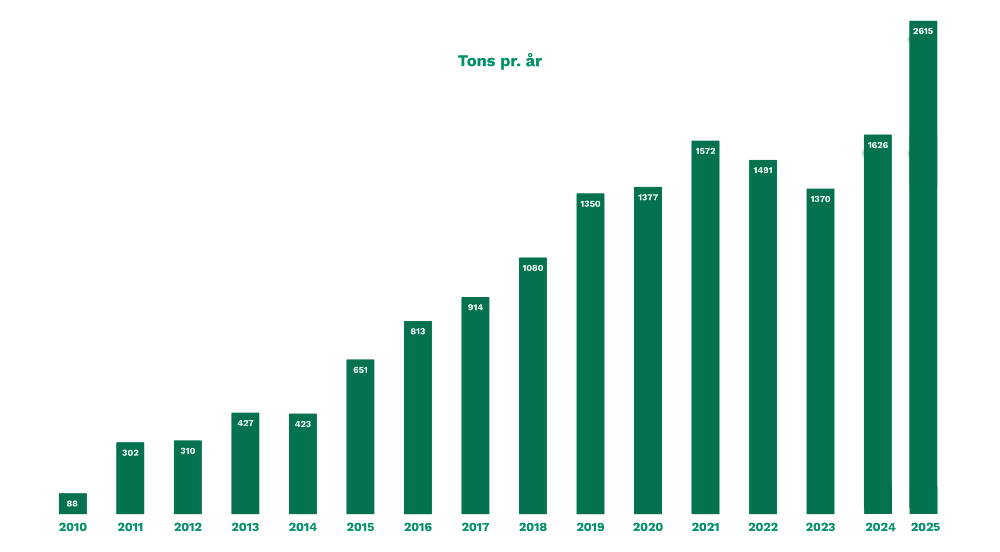

Grafen viser udviklingen i mængden af madspild i Danmark fra 2010 til 2025. Der ses en generel stigende tendens gennem hele perioden, hvor tallet er steget fra 88 i 2010 til 2.615 i 2025. Selvom der har været mindre fald i enkelte år, viser udviklingen samlet set, at madspild er blevet et stadig større problem i Danmark. Dette understreger behovet for øget fokus på bæredygtighed og reduktion af madspild.
Vores tips:
1. Lav en indkøbsliste, så du kun køber det, du har brug for.
2. Tjek udløbsdatoer, før du køber nye varer.
3. Brug syn, lugt og smag til at vurdere, om mad stadig kan spises.
4. Lav mindre portioner, så du undgår rester.
5. Gem rester og spis dem dagen efter.
6. Frys mad ned, før den bliver dårlig.
7. Brug grøntsagsrester i fx supper, gryderetter eller smoothies.
8. Brug gammelt brød til fx croutoner eller rasp.
9. Opbevar maden korrekt, så den holder længere.
10. Køb overskudsmad fra butikker og restauranter gennem fx Too Good To Go.
Løsninger du kan bruge: